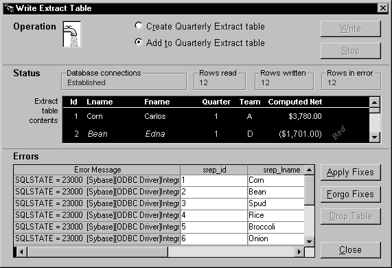

When a pipeline executes, it may be unable to write particular rows to the destination table. For instance, this could happen with a row that has the same primary key as a row already in the destination table.
To help you handle such error rows, the pipeline places them in the DataWindow control you painted in your window and specified in the Start function. It does this by automatically associating its own special DataWindow object (the PowerBuilder pipeline-error DataWindow) with your DataWindow control.
Consider what happens in the order entry application. When a pipeline executes in the w_sales_extract window, the Start function places all error rows in the dw_pipe_errors DataWindow control. It includes an error message column to identify the problem with each row:

 Making the error messages shorter If the pipeline's destination Transaction object
points to an ODBC data source, you can set its DBParm MsgTerse parameter
to make the error messages in the DataWindow shorter. Specifically,
if you type:
Making the error messages shorter If the pipeline's destination Transaction object
points to an ODBC data source, you can set its DBParm MsgTerse parameter
to make the error messages in the DataWindow shorter. Specifically,
if you type:
MsgTerse = 'Yes'then the SQLSTATE error number does not display. For more information on the MsgTerse DBParm, see the online Help.
Once there are error rows in your DataWindow control, you need to decide what to do with them. Your alternatives include:
In many situations it is appropriate to try fixing error rows so that they can be applied to the destination table. Making these fixes typically involves modifying one or more of their column values so that the destination table will accept them. You can do this in a couple of different ways:
In either case, the next step is to apply the modified rows from this DataWindow control to the destination table.
 To apply row repairs to the destination table:
To apply row repairs to the destination table:
Code the Repair function in an appropriate script. In this function, specify the Transaction object for the destination database.
Test the result of the Repair function.
For more information on coding the Repair function, see the PowerScript Reference .
In the following example, users can edit the contents of the dw_pipe_errors DataWindow control to fix error rows that appear. They can then apply those modified rows to the destination table.
Providing a CommandButton When painting the w_sales_extract window, include a CommandButton control named cb_applyfixes. Then write code in a few of the application's scripts to enable this CommandButton when dw_pipe_errors contains error rows and to disable it when no error rows appear.
Calling the Repair function Next write a script for the Clicked event of cb_applyfixes. This script calls the Repair function and tests whether or not it worked properly:
IF iuo_pipe_logistics.Repair(itrans_destination) &
<> 1 THEN
Beep (1)
MessageBox("Operation Status", "Error when &trying to apply fixes.", Exclamation!)
END IF
Together, these features let a user of the application click the cb_applyfixes CommandButton to try updating the destination table with one or more corrected rows from dw_pipe_errors.
Earlier in this chapter you learned how to let users (or the application itself) stop writing rows to the destination table during the initial execution of a pipeline. If appropriate, you can use the same technique while row repairs are being applied.
For details, see "Canceling pipeline execution".
The Repair function commits (or rolls back) database updates in the same way the Start function does.
For details, see "Committing updates to the database".
Sometimes after the Repair function has executed, there may still be error rows left in the error DataWindow control. This may be because these rows:
At this point, the user or application can try again to modify these rows and then apply them to the destination table with the Repair function. There is also the alternative of abandoning one or more of these rows. You will learn about that technique next.
In some cases, you may want to enable users or your application to completely discard one or more error rows from the error DataWindow control. This can be useful for dealing with error rows that it is not desirable to repair.
Table 17-4 shows some techniques you can use for abandoning such error rows.
For more information on coding these functions, see the PowerScript Reference .
In the following example, users can choose to abandon all error rows in the dw_pipe_errors DataWindow control.
Providing a CommandButton When painting the w_sales_extract window, include a CommandButton control named cb_forgofixes. Write code in a few of the application's scripts to enable this CommandButton when dw_pipe_errors contains error rows and to disable it when no error rows appear.
Calling the Reset function Next write a script for the Clicked event of cb_forgofixes. This script calls the Reset function:
dw_pipe_errors.Reset()
Together, these features let a user of the application click the cb_forgofixes CommandButton to discard all error rows from dw_pipe_errors.